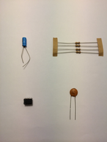

Component Identification:

Click a component to read more about it
A core principal of how electronics work is due to the properties the electrons flow through.
The first component we will discuss is the Capacitor
Capacitors
Formerely known as condensers are electronic components with the sole purpouse
of storing electrostatic current. As apposed to the resistor, which releases energy, usually as
heat. They are useful for blocking direct current(DC) while letting Alternating current (AC) to
pass through. This propertey can be used for tuning radios and stabilizing power systems output.
Electrolytic capacitors, are polarity sensitive( pictured in the top right corner of
the image). The side with the black band is the negative side. These are called Electrolytic capacitors.
Integrated Circuts
Integrated Circuts, or IC are used to provide and easy interface for creating circuts, to make the makers life easier, similar in concept to
the use of APIs by programmers for interfacing with common uses. ICs are basically compressed circuts, manufactured by machines for use of
other circuts in smaller form. Contained within an IC, is an extremely small circut, usually for one purpouse or application. Common ICs
are the LM386, a 1 Watt audio amplifer system on a chip, and the 555 Astable timer(NE555). These IC still require some construction, in parameters
and outputs. They can be used to make almost all applications for simplification. Common uses are for timers, radio recievers and transmitters,
or even simple gaming consoles, or computers, using the z80 or 6502 found in common game consoles of the 1980s to early 1990s. More advanced ARM b
based microcontrollers, and single board packages exist as well.